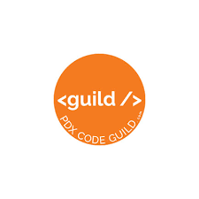
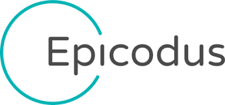

Ian has had a varied career, working as everything from a deckhand in Alaska to a medical librarian at OHSU; from a road crew worker in California and Oregon, to a Dramaturge here in Portland. Many of the past twenty years have seen him working in most levels of the culinary industry, most recently as the prep kitchen lead at one of Portland’s most exclusive retirement communities The Mirabella Portland. But after seven years there, six as the lead, it was time to move on to a new, more rewarding career.
To that end, Ian has set out to remake himself and his future by embracing his love and talent for problem solving and pattern finding, and is learning to code. With a solid beginner’s grasp of python 3x, and a less sure but definitely more-than-layman’s understanding of HTML, CSS, Django, Ian is looking to expand his knowledge with JavaScript, C#, and .Net before the end of the year. And if there’s anyone out there who wants to teach him Nginx or Apache...he’s a cook, a writer, a photographer, makes a mean kombucha, and he’s willing to trade.
If you'd like to look at some of the work I've done over the past year please feel free to look at my python_work repo on Github. Some of the projects I'm most proud of are my BlackJackFinalPass.py (which really isn't my final pass as it turns out), my tictac.py(toe) which is admittedly not the most aesthetically pleasing game of tic-tac-toe but I think it shows my problem solving skills, and coin_counter.py which is very basic script that figures out the least number of coins you need make change for any amount of money, but it’s the first piece of code that I wrote in my head and had to write down on paper.
Education

Graduate with triple honors 2010
Graduated Python Fullstack Bootcamp 2017
Currently Enrolled in C#/.Net Bootcamp